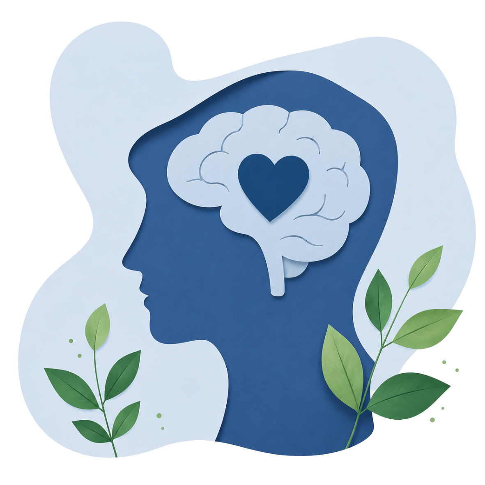

Evaluaciones gratuitas para explorar señales con más claridad.
Esta página reúne los accesos directos a los test gratuitos del proyecto: TDAH, TEA, ansiedad, depresión, burnout, estrés, organización, procrastinación, déficit ejecutivo, sueño, autoestima, impulsividad, perfeccionismo y dependencia emocional.
El objetivo es que puedas encontrar rápido el recorrido que más se parece a tu duda principal y pasar al cuestionario adecuado sin perderte entre demasiadas secciones. Si primero quieres contexto, explicaciones y preguntas frecuentes, puedes volver a la guía principal.

Los resultados representan únicamente un cribado orientativo y nunca sustituyen una evaluación realizada por un profesional de la salud mental.